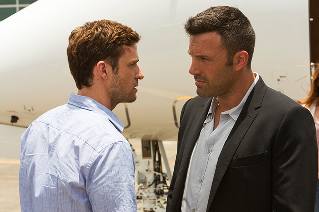

STORY
タイムリミットは48時間。
カジノ王とFBIを、
騙して逃げろ―。
プリンストン大学に在学する天才学生リッチーは、得意とするオンライン・ポーカーで貴重な学費を全額スッてしまう。
プレイ中、自分のカードが対戦相手に見透かされているような感覚を覚えたリッチーは、落ち込む間もなく、すぐにサイトのシステムを解析し、そこに隠されていたペテンを発見する。そしてサイト・オーナーでありカジノ王としても名を轟かすブロック(ベン・アフレック)のもとへ直談判に向かうのだった―。
海、ダンス、サーカス。きらびやかな賑わいを見せる中米コスタリカのカジノで、リッチーはブロックと対峙した。不正の根拠を提示されたブロックはサイトのシステム・エラーをあっさりと認め、その情報の封印と引き換えに、掛け金の返済と残りの学費の支払を保証する、と言い出した。
さらにブロックはリッチーの頭脳と機転を見込み、カジノ経営に誘う。物見遊山で足を踏み入れたものの、桁違いの札束が行き交う日々、そしてブロックのビジネス・パートナーである美女・レベッカとの恋に、徐々にハマっていくリッチー。
しかし、そんな“アメリカン・ドリーム”は突如終わりを告げる。仕事を終えたある日、リッチーは見知らぬグループに誘拐されたのだ。犯人はFBI捜査官のシェイバース。彼はブロックのカジノ運営における詐欺行為を疑っており、その右腕であるリッチーに「48時間以内にブロックの詐欺の証拠を持ってこい」と脅すのであった。
本当に不正が存在するのか、確信が持てない中、他の仲間たちは次々と消息を絶ち、ブロックには自らの家族の弱みを握られてしまう。戸惑うリッチーだったが、このままでは二度とアメリカに戻ることはできない。
「この泥沼から必ず抜け出してやる」。意を決したリッチーは、ただ一人信頼できるレベッカとともに、自分の命を賭けることになる一世一代の大博打を仕掛けることを決意する。リッチーが勝ち抜くために選択した最後の一手とは一体……！？